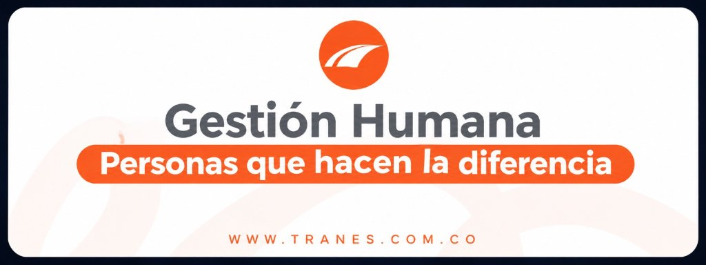

Accesos rápidos
Encuentra aquí las herramientas y enlaces más usados.
Guías y tutoriales
Te apoyamos de forma sencilla.
¿Qué hace el área de Gestión Humana?
Nuestros servicios y compromisos con cada colaborador de TRANES.
Selección y contratación
Atracción e incorporación del mejor talento, inducción corporativa y gestión de contratos de trabajo.
Nómina y seguridad social
Liquidación oportuna de salarios, aportes a EPS, AFP, ARL, caja de compensación y cesantías.
Bienestar y calidad de vida
Planes de recreación, convenios con cajas de compensación, celebraciones institucionales y auxilios.
Capacitación y desarrollo
Entrenamiento continuo, planes de carrera, evaluación de competencias y desarrollo de liderazgo.
Cultura y clima organizacional
Fortalecimiento de valores, comités de convivencia laboral, encuestas de clima y comunicación interna.
¿No encuentras lo que necesitas? Radica tu solicitud y te respondemos. Ir al formulario de solicitud
Nuestro equipo
Personas dedicadas a acompañarte en cada momento de tu trayectoria en TRANES.
Karen Andrea Giraldo Henao
Dirección & Estrategia de Personas
Líder de Gestión HumanaLidera la estrategia integral de talento humano y cultura organizacional. Asegura el bienestar de los colaboradores, el cumplimiento de la normatividad laboral y el crecimiento armónico del equipo TRANES.
Daniela Valencia Zapata
Atracción y Vinculación
Analista de Gestión HumanaGestiona convocatorias internas y externas, procesos de entrevistas, contratación formal y el plan de inducción y bienvenida de nuevos integrantes a TRANES.
Astrid Vanesa Restrepo Arredondo
Gestión de Talento y Vinculación
Analista de ContratacionesAcompaña los procesos de vinculación, gestión de documentación laboral, inducción de personal y seguimiento a requerimientos de los colaboradores.
Verónica Mejía Valencia
Nómina y Seguridad Social
Analista de NóminaCoordina iniciativas de bienestar integral, clima organizacional, beneficios corporativos, pausas activas y acompañamiento en novedades del personal.
Gerson Humberto Cardona Ceron
Apoyo Operativo & Administrativo
Aprendiz de Gestión HumanaBrinda apoyo en archivo documental, atención inicial de solicitudes de colaboradores, soporte en eventos corporativos y procesos internos del área.
Nuestro proceso de atención
Desde que radicas tu solicitud hasta que la resolvemos.
¡Juntos hacemos que transporte suceda!
-
1
Radicas tu solicitud
Ingresas a través de nuestro formulario de solicitudes o canales autorizados detallando tu requerimiento.
-
2
Revisamos y clasificamos
El equipo asigna tu caso al responsable correspondiente (Nómina, Bienestar, SST o Selección) según la prioridad.
-
3
Gestionamos
Generamos el documento, resolvemos la consulta o adelantamos el trámite informándote el estado oportunamente.
-
4
Respondemos y cerramos
Te entregamos la respuesta formal o certificado requerido y garantizamos el cierre satisfactorio de tu caso.
Centro de políticas
Conoce los lineamientos institucionales, derechos y deberes que rigen nuestra labor diaria.
Política de tratamiento de datos personales
Lineamientos claros sobre cómo protegemos, almacenamos y custodiamos la información sensible de nuestros colaboradores.
Ver documentoReglamento interno de trabajo
Normas, pautas de convivencia, horarios, deberes y derechos acordados para garantizar un clima laboral armónico.
Ver documentoPolítica de SST
Compromiso corporativo con la seguridad integral, prevención de accidentes y cuidado de la salud en cada puesto de trabajo.
Ver documentoCódigo de conducta y convivencia
Principios éticos, respeto mutuo, no discriminación y canales confidenciales del Comité de Convivencia Laboral.
Ver documento